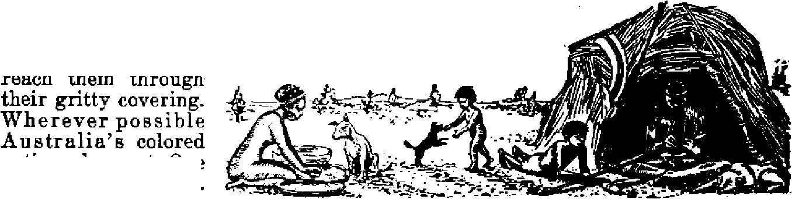
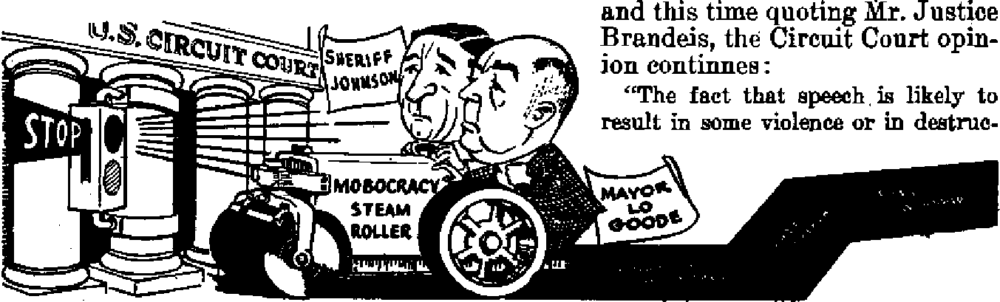

Her Indian community presents die thorniest racial problem
National lottery called "a blessing of God”
Iowa’s Mobocracy Declared Illegal Circuit court upholds rights of Jehovah’s witnesses as it reproves the town of Lacona
The sun, and its benefits to earth
DECEMBER 8, 1947 semimonthly
THE MISSION OF THIS JOURNAL
News sources that are able to keep you awake to the vital issues cf our times must be unfettered by censorship and selfish interests. “Awake I” has no fetters. It recognizes facts, faces facte, is free to publish facts. It is not bound by political ambitions or obligations; it is unhampered by advertisers whose toes must not be trodden on; it is unprejudiced by traditional creeds. This journal keeps itself free that it may speak freely to you. But it does not abuse its freedom. It maintains integrity to truth.
<EAwake F* uses the regular news channels, but Is not dependent on them. Its own correspondents are on all continents, in scores of nations. From the four corners of the earth their uncensored, on -the* scenes reports come to you through these columns. This journal's viewpoint is not narrow, but is international. It is read in many nations, in many languages, by persons of all ages. Through its pages many fields of knowledge pass in review—government, commerce, religion, history, geography, science, social conditions, natural wonders—why, its coverage is as broad as the earth and as high as the heavens.
“Awake!” pledges itself to righteous principles, to exposing hidden ^es and subtle dangers, to championing freedom for all, to comforting curriers and strengthening those disheartened by the failures of a dinquent wprld, reflecting sure hope for the establishment of a right-ms New World.
Get acquainted with “Awake!” Keep awake by reading “Awake 1"
Published Semimonthly By WATCHTOWER BIBLE AND TRACT SOCIETY, , INC.
117 Adams Street Brooklyn 1, N. Y., U. S. A,
N. H. KHORH, President Grant Suiteh, Secretary
Five cents a copy One dollar a year
Rftmlttanm stolid be sent lo office In your country Id compliance with regulations id guarantee safe delivery nd money. RemitUDces are accepLM at Brooklyn from countries where no office Is located, by international money order only. Subscription ratfiB lh different countries era here ala led in local currency.
Not In of expiration (with renewal blank) is sent at least two teeuga before anbecripllnn expires.
Chan£ of address when sent to cur office may be expected effective within one month. Send your old as well as new address.
Offices Yearly Subscription IUto
America, (LB., 117 Adams Bt., Brooklyn 1, N.Y. |L Aartralla, 7 Beresford Rd.± Strathfldd, N s.W. Bu Canada. 40 Irwin Avc.t Toronto 5, Ontario |1 England, 34 Craven Terrace, London, W. 2 Bs South Africa, 623 Boston House, Cape Town 6a
Entered as Becood-dASS matter at Brooklyn, Ni Y., Art of March 3, 18 79, Printed in U. S. A,
CONTENTS
A Thorn in South Africa’s Side
Gambling’s Strangle-Hold on Panama
"A Blessing of God”
Iowa’s Moboeracy Declared Illegal
Bikini Natives "Starving and Forgotten*’ 20
“Thy Word Is Truth”
The Spiritual Anointing of Sons
®^Now it is high time to awake?—Romans I3:tt &
Voium XXVIII Brooklyn, N.Y., D«c«mter fr 1X7 Number tt
A Thorn in South Africa’s Side
W’C'AST is East and West is West/ Hj wrote Kipling, fervent defender of British white supremacy, “and never the twain shall meet.’’ But in South Africa the twain have met, and the resulting explosions threaten to provide the spark to set the world once more ablaze in flaming war.
The East is represented in South Africa by a bustling Indian community numbering some 250,000 souls. They are the smallest racial group within the Union’s borders, and the latest comers, but th© endeavor to fit them into the framework of a complex, heterogeneous population of 10| million has provided South Africa with the thorniest of its many racial problems. The efforts of successive South African governments to solve the problem have provoked bitter opposition not only from Indians in South Africa but from the government of India itself.
Bitterness has deepened with the years And outraged feelings bubble up in angry threats and excited accusations. “I wish that India was in a position to declare war against South Africa here and now,” said Dr. M. B. Khare, a member of the Indian government, in New Delhi, on November 6, 1944. In 1946 India declared diplomatic and economic war on South Africa, On March 12,1946, Dr. Khare announced in the Council of State at New Delhi that the Indian government had decided to terminate trade relations with South Africa. The Indian high commissioner, to South Africa was also withdrawn.
Shortly thereafter the matter was brought into the arena of world opinion. Pursuing its demands on behalf cf its fellow countrymen for complete equality with Europeans in South Africa, the Indian government charged South Africa before the 1946 meeting of the United Nations organization’s General Assembly with having violated the charter of the United, Nations, to which the South African government is a signatory. The Indian complaint produced the hitterept and most acrimonious debates of the Assembly. In a majority vote South Africa’s Indian policy was tacitly condemned, and the governments of India and of South Africa were ordered to report back to the next General Assembly of U. N. on the steps they have tnken to resolve their differences. In the intervening months little progress has been made.
Indian Coolies Imported
The Union of South Africa consists of four provinces: the Cane Province, Transvaal, Orange Free State and Natal. The union of these four provinces is a matter of recent histpry, having been accomplished just 37 years ago. The coastal belt of Natal is subtropical, fertile and well-watered, and in tnifl green coastal belt sugar is king. The South African Indian problem is the noisy child of the Natal sugar industry.
Shortly after Natal became a British colony, sugar cane was introduced from the near-by island of Mauritius. By 1852 it was Natal colony's major crop. But the planters complained that they could not get labor for their fields. The native Bantu were slow to leave their kraals to work for the white man, and when they did come they were heavy-handed and undependable. The embryo sugar barons cast longing eyes at Mauritius and the West Indies, where imported Indian coolies were working wonders with the sweet cane, and cried aloud for brown men to help them.
They met opposition from their fellow colonists and from the government of India itself. But the cry continued and in 1860 the first shipload of Indians landed in Natal. Mostly Madrassi coolies of the lowest castes, they were allotted to masters for three years (later changed to five years) under indenture. Wages wTere 10s. a month, rising to 12s. in the third year, with food, quarters and free medical attention thrown in. A writer has commented that “it was the cheapest labor, short of slavery, in the world”. That is probably true, but it is also a fair comment that recruitment was entirely voluntary and conditions in India must have been pretty had to induce the coolies to accept service on the Natal planters' terms.
At the end of five years the coolie was entitled to a free passage home to India. But he could, if he wished, remain in the colony and live and work as he pleased. If he chose to remain he was entitled, at the end of ten years' residence, to a grant of Crown land equal in value to the cost of his passage home. In 1860, when the first Indian landed, the European population of Natal colony numbered only 7,000. During the next twelve years 30,000 indentured Indians came. When their indentures expired, many of them stayed to form a permanent Indian community in Natal. Natal's sugar prospered, Under nimhle Indian hands the cane flourished and yearly the cane belt crept farther north and south. The planters grew rich, and continued to import coolies, the basis of their wealth. But the rest of European Natal was not so happy. Steadily the permanent Indian population was increasing and soon the alarmed colonists found that they were being outnumbered by the Asiatic newcomers.
The Trader
It was not the coolie so much that _ European colonist feared. His value ti the colony was frankly recognized. Even when his indentures had expired and he remained to settle in Natal, a free man in his own right, the coolie served a “useful” purpose. As cunning market gardeners, ex-coolies gave the coast towns an unrivaled supply of fruit and vegetables, as fishermen they brought in a bumper harvest from the sea, and their services as domestic servants, farm laborers and petty Artisans were much sought after. But in the wake of the indentured Indian laborer had come the Indian trader, both Mohammedan and Hindu, It is the trading class among the Indians who to this day constitute almost the whole of South Africa Indian problem.
The Indian trader enjoys a great advantage over his European counterpart Even though he is generally of a much higher caste than the coolie, his standard of living judged by European standards is primitive. Consequently he can trade on a margin of profit on which the European trader would starve. European traders, therefore, regard Indian competition as unfair. But the Indian trader could not be excluded from Natal without cutting off the supply of indentured coolie labor, and the Natal Legislative Council and the planters, almost synonymous terms, were determined that the flow of wealth-making labor should not cease. So Natal’s two Indian populations increased side by side: the coolie, tolerated for his usefulness, and the trader, despised for his' trading methods and feared for his success.
But there can be too much eVen of a good thing, and by 1891 the permanent coolie population had increased to an extent that threatened to swamp European Natal. The now thoroughly alarmed colonists began to agitate for a reduction in their numbers. The first move to this end was the repeal of the old law offering ex-indentured coolies free Crown land after ten years* residence in the colony. But the flow of new indentured Indian labor was not allowed to stop, and the free coolie population kept increasing.
In 1893 Natal was granted responsible gqvernment by the British Crown and at once suppressed anti-Indian feeling found vocal and practical expression. At first the newly-formed Natal government tried to arrange ways and means with the Indian government for the removal of her surplus Indians. When these efforts failed, the colony, now able to legislate in her own right, imposed legal limitations on her free Indians. In an effort to keep out the trading class as distinct from the indentured coolie she applied an education test to free immigrants, denied the parliamentary franchise to all who came from states, like India, which were without representative institutions, and refused trading licenses to traders who failed to keep their books in English, To urge the coolie to go home at the end of his period of indentures a tax of £3 a year was imposed on all those who stayed.
But,‘in spite of these restrictions, the indentured Indian laborer came, and stayed; and still he was followed by the higher-caste trader and a sprinkling of professional men. Among these latter ones in the year 1893 came an unknown Indian lawyer named M. K. Gandhi. A year later Gandhi founded the Natal Indian Congress.
The Transvaal
To the north and northwest of Natal lay the two Boer republics of the Orange Free State and the Transvaal. The Orange Free State had resolutely shut its doors to all Asiatic immigration. Ite doors are shut to this day. The Transvaal republic would have liked to do the same, but under the London Convention of 1884 it -owed certain obligations to and enjoyed certain concessions from Great Britain. And the Indians were British subjects. So President Kruger and his advisers feared to go too far. Nevertheless, in order to discourage the brown flood from pushing across the Drakensberg to the Golden Reef, the Transvaal government passed certain anti-Asiatic laws. Asiatic immigrants had to be registered, they were forbidden to own fixed property and had to reside in special areas set apart for them. This may have discouraged but it certainly did not stop Indian immigration into the Transvaal. .Anti-Indian feeling runs higher in the Transvaal thair anywhere else in the Union. Among the first Indians to enter the Transvaal, was the lawyer, M. K. Gandhi, who acquired a lucrative legal practice in Johannesburg. He soon became the focal point of Indian agitation for the removal of all restrictions.
India Hits Back
The Indian government had never ceased to interest itself in its departed children, and complained constantly against the laws framed against them. The main point of irritation was the Transvaal anti-Indian laws, but the lesser Natal restrictions were also resented. Then, in 1908, when the Natal government parsed a law making it still more difficult for the Indian trader to obtain a trading license the Indian government decided at long last to cut off the supply of coolies. This was not done purely in a spirit of retaliation, for (to quote Walker’s History of South Africa, p. 546):
From 1907 onwards the Viceroy, Lord Minto, and his Council had contemplated ending the whole evil system of recruiting this semi-servile labour, evil in its effects on those parts of India where native touts harried the villagers for recruits, evil too in its effects on the morals of the coolies and, still more, of those luckless women who had to accompany them, one to every three or four men.
The Natal planters, who had recently extended their activities to the growing of tea and who now needed Indian labor more than ever, sent a deputation to pray on its knees to the Indian government for mercy. Simla relented a little. Natal would be allowed to import coolies until 1911 but after that the supply would stop. It was to stop not only for Natal but for the rest of the world as well The planters went home ruefully to make the best of it. Although the last indentured coolie landed in Natal in 1911, the system as a whole did not end until 1920.
Meanwhile, under Gandhi's leadership Indian agitation in South Africa was becoming more vocal and soon the central South African government (amalgamation of the four provinces now having been achieved, in 1910) ,was forced to take notice. Under pressure of Gandhi's newly conceived “passive resistance" and moved perhaps by the threats and complaints of the Indian government, the Indian Relief Act of 1914 was passed. Under this act the hated £3 a year tax was removed and other concessions made, but only a fraction of the Indian's demands was met Nevertheless, Gandhi called off the passive resistance cam: paign and told his followers that the Relief Act must he the basis from which they must work for their further advancement. Then he threw up his flourishing legal practice in Johannesburg, which he now regarded as immoral, and sailed for India to devote himself to the service of his people.
Laws and the Latest Explosion
The years since 1914 have seen two world wars and many changes, hut the South African Indian question remains-a hardy perennial among South Africa racial problems. Although Indian immigration has stopped, the Indian fertility rate is twice that of the European and census figures show a continued steady increase in their numbers. And as they have increased in numbers so has increased in volume their cry for rights and privileges. In this year 1947 it has become a shout that echoes in most of the world's capitals. This shout comes mainly from the trading and professional classes.
Eighty-three percent of the Union's Indians are located in Natal. Most of the remaining 17 percent are in the Transvaal, with an almost negligible number in the Cape Province. In the Cape and Natal there w ^'e until recently no statutory limitations to an Indian's right io buy property where he pleased and to live and trade on equal terms with Europeans, In the Transvaal such limitations have existed since republican days and still exist today. It was the application, in essence, of these statutory limitations to Indians in Natal that provoked the present storm.
In 1943 a government commission reported that Indian penetration in Natal, particularly in its chief town, Durban, was assuming truly aggressive proportions. Alarmed European opinion in Natal clamored for action. The result was the temporary “Pegging" Act of 1943 and its successor, the Asiatic Land Tenure and Indian, Representation Bill of 1946. Briefly, this legislation introduces into Natal the control of property deals between Asiatics and non-Asiatics, and confirms it in the Transvaal, Tn this respect the new legislation is related to the old-Transvaal laws, but with this difference: while the Transvaal laws were frankly discriminatory against the Asiatic, in Natal the new laws apply equally to the European and the Indian, An Indian may not buy, live or trade in predominantly European areas, and a European may not buy, live or trade in predominantly Indian areas. The new legislation also provides for Indian representation in Parliament, something they have never had before. Representation is to be on a communal basis, three members in the Assembly and two in the Senate to represent the Indian community as a whole.
But the Indians will have none of it. The land tenure sections of the bill they reject as depriving them of fundamental rights. The Indian representation provisions they likewise reject because such representation is to be qn a communal basi^. They demand to be placed on the common voters’ roll, side by side with the European. The European’s reply to these demands today is substantially the same as the reply they made to Gandhi’s similar demands in 1913. It is well stated in Walker’s History of South Africa, p. 548:
The Indians by reason of their religion and ancient traditions were a class apart in South Africa, despised by the Zulus as servile aliens, able by dint of a low standard of life and incredible industry to undercut European trading rivals, and, in many cases, content with truly Oriental sanitary conditions and a code of business ethics to match. The mass of them were of low caste or of no caste. Yet Gandhi was claiming the rights of Europeanized British citizens in South Africa for men who were “untouchables” in their own country. The claim could not be admitted. That, whether right or wrong, was the view taken by the majority of South Africans of a question which was at bottom economic.
The ludian demands complete equality with the European, politically and economically. The European replies that the Indian cannot receive such equality until his social habits and way of life conform to European standards. For the mass of the Indian population the Europeans’ reply still holds good, in spite of much progress along western lines. The weakness in the European’s case is that no provision for equality exists for the-DECEMBER 8, 1847
Indian who has reached European stand* ards. It is ludicrous that the Indian gentleman of culture and education— and there are many such—should be confined, in European eyes, to the social level of the Madrassi coolie. Many white South Africans are now concluding that the time is ripe for the application of Cecil Rhodes’ dictum: “Equal rights for all civilized men.” “Civilized” in this case, of course, means “westernized” and the application of Rhodes’ stated principle would give to a small percentage of Indians in South Africa full civic rights.
Disabilities
The disabilities under which Indians labor in South Africa are briefly as follows: They lack full ballot rights; they are unable, owing to provincialimmigra-tion barriers, to travel freely from province to province; in the Transvaal and Natal they may not buy fixed property or live or trade except in scheduled areas (in Natal this disability applies equally to Europeans); they are subject to all the petty irritations and indignities of the color bar, which is universal in South Africa.
This last disability the Indian loathes most. The sensitivity of the Indian to insult, or seeming insult, is proverbial and throughout their struggle in South Africa this hypersensitivity has been marked. In the early days of the struggle Gandhi pleaded against a bill providing for the total prohibition of Asiatic immigration into the Transvaal. “Do not dishonor us,” he begged of Smuts, “Do not cast a stigma on us in the laws of your country.” Decades later, in March, 1944, in opposition to the Pegging Act his followers again pleaded with Smuts, “Do not dishonor us,” they begged, “Do not cast a stigma on us in the laws of your country.”
Europeans charge that the Indian leaders are more concerned with chasing the shadow of a theoretical equality than with the desperate need of the mass of their people tor uplitt ana escape irom traditional squalor. It is the European, they claim, who is carrying the burden of Indian education, Indian housing and general welfare. But it is also true that Europeans admit they have not done nearly as much in this respect as they might have, or as much as they are morally bound to do under the Cape Town Agreement of 1927.
The Indians have latterly prejudiced their case in South Africa by ill-advised and sometimes hysterical action. South Africans resent the Indians’ appeal to Mothd’f India. If the Indians in South Africa are South Africans, they say, then they should work for the fulfillment of their demands by constitutional methods within the framework of the country’s laws. They should not call upon a foreign country to bring pressure to hear upon their homeland. If, on the other hand, they are still citizens of India then their claim for civic rights in South Africa is baseless.
South Africans resent, too, the charges blazoned throughout the world that Natal Indians “are kept in a state of slavery . . . are segregated in locations, bazaars, concentration camps or ghettos”. South Africans point out that the Asiatic Land Tenure ■ Bill, which the Indians have duhbed the “Ghetto Act”, separates communities which are incompatible in order to avoid communal friction and strife. Europeans view the act as a restriction on Europeans and Indians alike. The hypersensitive Indian sees in it an insult aimed at himself. However, an impartial fairijess must grant that “restrictions” on Europeans entering the Indian sections is actually no restriction at all and only made to look good on paper, as it is the European demanding segregation from the very elements be once imported for selfish advantage.
But on the other band, and understandably, the European finds it difficult io sympamize wim me in man h senaruv-ity to segregation for the following reasons : First, “uut ouch ability” as practiced in India is segregation of the worst kind; and, second, the Indian’s attitude toward the other non-white races of South Africa is not consistent with his protestations. For the Indian regards the native African as a man vastly inferior to himself and of another color, and is reluctant to concede equality with himself even to the 750,000 Colored (mixed-blooded) South Africans whom Field Marshal Smuts has described as an “appendage to the European race” and whose habits and way of life are more closely-fillied to those of the European than are either the Indian’s or the African’s. This is true in spite of a partial coming together of the leaders of all three sections.
It is noteworthy that most commentators point to the Indian’s religion as the main factor that separates him from the European and keeps him in a state of depressed squalor. This is true particularly of the Hindu. In South Africa the Hindu’s religion does not bind him as tightly as it does in India, but its shackles are still strong and at every turn it bars his struggle upward. Its general effect seems to he to prevent him from thinking clearly and objectively, and it certainly provides no incentive to social progress.
The Indian in South Africa today feels that his greatest need is political and social equality ■with the European. He is wrong. His greatest need is to receive a knowledge of Jehovah’s Word and kingdom, that kingdom which, under Christ the King, and not under the Europeans or any other men, will shortly institute its rule throughout the earth and which will put into operation the divinely stated truth (Acts 17: 26): God “hath made of one blood all nations of men for to dwell on all the face of the earth”.— Aivake! correspondent in South. Africa.
Q ambling’
ngle'Hold
Connecting
North America and South America is a narrow strip of land xjalled'the Isthmus of Panama. Two mighty oceans beat upon its shores, the Atlantic on the north and the Pacific
on the south.
At its narrowest point the Panama Canal cuts through to link the oceans. Ships from every part of the earth converge upon Panama, transit the canal, and continue their voyages to other parts of the earth. Air traffic is also quite heavy. A steady stream of strangers comes and goes. Because of its location ana its canal Panama has heen termed the “crossroads of the world”.
Panama depends largely upon the visiting strangers for her livelihood Her principal cities are located at each end of the canal, Panama on the Pacific end and Colon on the Atlantic end. These two cities are equipped to entertain. Many cantinas apd harrooms dot the city areas, there being one on nearly every corner, with music box blaring forth day and night to attract thirsty travelers. Then there are the cocktail lounges and the many night clubs, where elaborate and sensational floor shows are presented nightly, shows imported directly from New York and other centers of the entertainment world. Horse racing, prize fighting and bull fighting are enterprises to attract the visitors and their money. On May 15,1947, Panama’s first gambling casino was opened in Panama City’s Hotel Internae? onaL In its attempt to still the storm of protest that arose from the more' conservative element and the university students as to the ill effects that the casino might have upon the mor-fled it on the ground that through it the national budget could be balanced. However, the main gambling project of the country is the government-o pe r ated national lottery. Into it is poured not-only much tourist money, but also a large portion of the native workers’ wages.
als of the country, the government .that
operates the gambling enterprise^ justi- ■ WO goes into the national treasury week-
Originally the lottery was a private concession, but in 1919 it was taken over by the national government? and since then has been run on a national basis, with all profits going to the government There are two kinds of lottery tickets, ordinary and chances. Each week 10,000 ordinary tickets are issued, ranging in price from 50 cents to $28, with many more of the cheaper chance tickets, costing from 20 cents to $5, being sold throughout the republic. The ticket vendors are particularly in evidence in th§ principal cities of Panama and Colon, There they are grouped on the busiest street corners and sometimes as many as a dozen ticket sellers are strung out along the sidewalk. They are constantly surrounded by a crowd of- persons seeking the numbers. Though a law prohibits children nnder the age of 18 years selling tickets, it is generally ignored and one encounters children of all ages on the streets so employed.
Every Sunday morning at 11 o’clock the weekly drawing takes place and the winning numbERS are immediately announced over the radio and posted in store windows and other public places for all to see. The many prizes range from $1 to $56,000. The total amount paid ont weekly is $450,000. This sum of prize money is 75 percent of the receipts, which means that approximately $150,-ly, $600,000 monthly, or $7,800,000 yearly, from this one source of gambling; and this in addition to all other money collected in taxes.
a, iw 9
“A Blessing of God"
This money is dedicated to administration expenses and to the building and maintaining of numerous hospitals and asylums,! homes for the aged, Reformatories, the national Red Cross and other institutions of a public and charitable nature, many of which are Catholic. It is claimed that, without the proceeds of the lottery, such charitable institutions could not be maintained by the republic. Because of the use to ■which the money is put the lottery is called “The National Lottery of Beneficence” and is widely advertised over the radio as “a blessing of God to our country”. On this basis the people are urged to support it. The fact that God is tied in with the lottery reveals the' hand of religion behind it, and a closer scrutiny shows that its main offices are located in a part of the bishop’s palace in Panama city and that many of the Catholic institutions of the republic are supported by the gambling revenues.
The effect of the lottery itself on the minds and lives of the people is unquestionably bad, and this fact the government admits. However, it excuses itself upon the grounds that the people are accustomed to gambling, and they have ail overpowering urge to gamble, and that it is better that it be done openly and legally and let the government benefit by it rather than to have it done illegally, with private individuals reaping the benefit. They also point to the public good done by the money derived from the lottery ticket sales. But by taxation the government could raise the same amount and distribute the burden much more equitably.
Now let our examination probe a little deeper into this ‘^blessing of God” to see its effect upon the minds and lives of the people. The effect is little upon the tourists and visitors. Passing through, they indulge in whatever the country has to offer. They have the money to spend just on that occasion for the novelty, and if they lose no harm is done. The real damage is to the natives who live with the lottery week iii and week out and who all but stake their very lives upon it. With them it becomes a vicious habit and with some an obsession, as week after week they buy their numbers, hoping against hope that they will win. Debts and needs for food and clothing are made to wait as weekly wages are used to buy lottery tickets, in the elusive but glittering hope of winning enough to pay off the entire debt or be able to meet family needs for months or years to come.
The majority of the people are quite poor. Wages are low, living costs are high. So, in order to have money for the weekly lottery numbers, something must be sacrificed. And it is amazing to see the lengths to which some go in order to regularly buy the tickets. Many will take their last cent; others will borrow money, and this regardless of whether there is food in the house for themselves and their children or not. If they lose it means going hungry until the next payday. Most families live crowded up in one or two tiny rooms, families that may include eight or ten persons, and yet, instead of finding better living quarters and using their money in that way, they spend from five to twenty dollars weekly on the lottery and continue to go hungry, half-clothed and poorly sheltered. Some will save for years in order to make one plunge into the lottery, thinking that they have figured out the winning number, only to lose their life’s savings. It is useless to try to point out to them that it is only a huge racket, that God has nothing to do with it and that if they were to save the amount of money each week that they pour into the lottery they would have the essential things that they need.
“Beating the Saints”
Not only do they pour their money into it, but, having done so, they look to God to make their numbers win. Feverishly they implore Him through their favorite “saint” not to let them down. Many are the tales one hears of how the “saints” have answered their prayers in this regard. One that is typical and amusing and pathetic is of an old lady who always prayed to her “saint”, her prayers being directed to his image. If he was believed to have answered her prayers and she won on the lottery, well and good; but if she lost, she beat the “saint” and put him behind the door.
Of course, there are those who do win large stakes, and that perhaps on the purchase of only a few tickets, but that is the exception rather than the rule. Then, too, nearly everyone will win small amounts as he goes along. Nothing compared with what they have put into it, hut it is just enough to keep them buying tickets in the hope that they will win a substantial prize. Though each week’s failure leaves them sick with disappointment, it also brings them a fresh hope of winning on the next week’s drawing, and one dare not fail to buy his numbers lest that be the week they are drawn.
Imagine, if you can, the effect upon the mind of one who has bought a certain' number for weeks, months or even years, without having won any appreciable amount of money and decided tp quit buying it, only to have it turn up as the winning number a week or two later. Or perhaps one has dreamed a number, which so often is the case, and then did not play it and it turns up as the winner.
■*re<------
The fear not to play the lottery builds up within the native inhabitants, and hoping against hope they continue week after week to throw away their meager earnings. A desire of something for nothing, or a lot for a little, is so strong that it overpowers reason. Indeed, the “national lottery of beneficence” has clamped a strangle-hold upon Panamanians.
The most incongruous aspect of the whole thing is the fact that God is tied in with this. Honest-hearted persons can readily see that the god who blesses it is not Jehovah, the true and living God, but is the god of this world, Satan the Devil, and that the entire thing is an example of his old world in operation, to make dupes and fools of the people, while at the same time they are made to believe that it is God’s arrangement for their blessing. The politicians have legalized the racket, the commercialists advertise and push it, and the religionists also keep watch over it and bless it, while the poor people pour into it their very lifeblood, all to the reproach of Jehovah, who the people ignorantly believe is responsible for everything that takes place On this globe, including the lottery. Then, when they lose, their faith wanes.
Paying less attention to'the misleading clergymen in Christendom and giving more heed to God’s Word, the Bible, people in all nations could quickly learn that Jehovah God is not the god of gambling, neither do His blessings come as a result of chance. His blessings come with certainty to those who love and serve Him, and they come free of charge, and not through lottery tickets.—Awake! correspondent in Panama.
-
Jesus “entered into the temple, and began to east out them that sold and them that bought in the temple, and overthrew the tables of the money-changers, , . .
and said unto th^m, 7s it not written, 3ft/ house shait be calied a house of prayer for all the nations? but ye have made it a den of robbers. And the chief pAests and the scribes heard it, and sought how they might destroy him”.
—Mark U:15-18y Am. Stan. Ver.
Australia’s Vanishing Natives
HOW long ago the Australian aborigine set foot on . the island continent neither archeologists nor historians can tell as. It is conjectured that two different races settled there in the long ago, and that from the various blendings of these two, the black and the yellow, the present tribes, of Australian natives have sprung. Modern civilization dawned with the coming of the white man, and the establishment of the city of Sydney iu 178d. In the intervening centuries evidently few have visited these remote shores. Isolation separated the Australians from the great civilizations of the East and the West. When European civilization finally did hurst in upon their isolation it found these forgotten tribes living in a manner about as fa removed from the civilized as can wel be imagined.
The unsettled areas of the continent that now harbor a number of the native tribes are those around the Gulf of Carpentaria, aud parts of the Northern Territory, north Western Australia and the arid deserts of central Australia. Rem-
Hants cf once great tribes struggle to live in certain southern areas also.
The Physique
The nomad hunting life of the Australian natives demands that they have as little surplus weight, as possible. Their spines are flatter than those of any other race. The hip hones seem remarkably close together in both sexes. Their arms and legs are long. Many have thought that their arms are longer than their legs, but that is not so.
The nose and forehead are striking facial features. Brown eyes are sunken and overshadowed by overhanging beetling brows and bushy eyebrows. A bony ridge makes a natural eyeshade for them from the glare of a powerful and evershining sun. Their noses arc broad and flat. When a native mother finds that the nose of her child is not growing flat naturally she will massage it until it is flat. In some tribes, however, the aquiline nose is found, and tnis is taken by some to be an indication that in the dispersion Jews found their wav to Australia, as well us to China. The lips of the Australian native are thick, jaws projecting, chins weak.
Skulls are thick and strong. Husbands have found that the quickest way to silence an angry, nagging wife is to hit her several times over the head with his heavy war club. This is very effective in dealing with a spouse wbo persists in broadcasting her troubles and her opinions of her husband a: high level to the camp. After a few well-directed blows peace is restored in the household. Fears of being thus manhandled do not defer wives from giving vent to their feelings. Seldom does the rough treatment bring serious effects. Skulls are also favorite targets in duels.
Unusual Skin Color
Though the Australian native calls himself a “black fellow", he is actually brown. The color tends to vary with environment. Ou bright days it is dark and dingy; on cloudy days, a chocolate brown; and on the clear open sea, coppery and no darker than that of the Javanese. The skin of a newly-born pickaninny is very much paler than that 'of its parents and lias a sort of rosy tint, but within a few weeks it turns dark.
The pigmentation lies very' close to the surface. Thus if the outer layer peels off, as occurs in the preparation of a corpse for burial, the flesh has a pinkishwhite color. Little wonder, then, that the natives regarded the first white visitors to their shores to be their own dead warriors returned to life. Their idea of reincarnation led them to save the lives of many a white man, inviting such to live with them. The dark hereditary pigmentation, weaker than with other colored races, disappears in a few generations of mixed marriages and, so far as is known, does not reappear.
The natives select camp sites where the ground is level and close to a river, creek or water hole. A number of not tfery inviting huts dot the cleared camping space. These huts, “wurleys” or “gunyahs”, are much the shape of the Eskimo igloo and measure some five feet high and up to nine feet in diameter. Curved sticks worked around a center pole provide a framework for the roof, which is made of grass, twigs, bark or whatever is available. Tribe folk build these huts only on permanent camping spaces or where mosquitoes are troublesome, While on a “walk-ahout” (moving between permanent camps) frail lean-to’s or “miamias” do for protection against the weather.
The nocturnal visits of mosquitoes have induced some tribes to make the entrances of their huts as small as possible and to sleep enveloped in smoke from a fire inside the hut The only furniture of the hut is rugs of opossum or kangaroo skins. Sometimes the tribe sleeps outside on platforms under wThich fires are kept burning whose eurling, billowing smoke protects the sleepers from the marauding mosquitoes. Repeatedly during the night the fire has to be given attention to keep up the smoke. When on
Others squat with their heels together l and close in
a walk-about” this means of protection is missing, so they sleep covered with sand or mud and dare the mosquitoes to
natives sleep out. One eaunot blame them.
DECEAfBEJi s, 19^7
13
Preparing the Food
Every household has a set of grinding stones used in a rough handmade wooden bowl to grind roots and seeds. For cooking food a small, glowing mass of coals is used. The women, “lubras* or “gins”, cook on these fires the small game they have caught, such as snakes, lizards, grubs and fish. Roots and seeds are also utilized. The natives are omnivorous in their tastes. When big game, such as kangaroo, wallaby, water buffalo, dugong or sea cow, iguana or crocodile, is on the menu the men of the camp set to work. They light a big fire and by a combination of hot sand, hot ashes and hot stones cook the game whole. Cooking loosens the skin and intestines of the game so that the men have little difficulty in removing them. They then pull the cooked carcass to pieces and hand it around to the diners. Europeans who have tasted their cooking say it is a little underdone to their taste. All of the animal is eaten at one sitting.
The women, in addition to catching smaller game, collect seeds and roots and prepare them for eating. They also gather firewood, which is scarce around many of the camps. When a woman finds a stick she grasps it between two toes of one foot and lifts it up behind her body high enough for the opposite hand to grasp it, while the other hand keeps the sticks already piled on her head from falling.
The colored tribes have two unique ways of sitting. Some double tbeir shins under their tbighs and rest on them and the balf-uptumed soles of their feet. against their buttocks, at the same time keeping their knees well apart and clashing them with their hands. The men have a stance that enables them to stand for long periods with the minimum of exertion. Standing on one leg, they lean on a stick or spear to keep balance, while the free leg is bent so that its sole rests against the knee of the upright leg. When one leg tires they change to the other.
When game is plentiful camps have many unwelcome visitors desiring to sample the stored provisions, and the na-tives, to forestall thieving by dogs and vermin, store provisions on high platforms. But that does not stop the hawks, which are absolutely fearless, swooping down ont of the blue sky and taking what they can tear off. Their depredations are countered by heaping branches over the stored carcasses.
Dogs in Abundance, Goods Few
Every native family has a number of dogs, fifteen to a family being abont the maximum. In the wild parts they catch and tame Australia's native dog, the “dingo*, while a pup. Closer toward civilized parts they breed European types of dogs in large numbers. Families so spoil and pamper their dogs that they cannot be used for hunting.
Personal possessions are few and consist mainly of shields, spears for hunting and fishing, spear throwers or “wom-eras”, boomerangs, clubs variously called “waddies” or “nulla-nullas”, and stone axes. Domestic equipment is a digging stick or two, firesticks and, in certain tribes, fishing nets and plaited baskets. Firesticks serve as matches between camps. Should the' firestick go out they kindle a fire by the fire-whisk or fire-saw method. Where goods for barter are plentiful, such as the narcotic pitjure leaves and red ocher, they spend much of their time preparing them for exchange. Having a nrinimujn of possessions, they have little to load them down when deciding on a “walk-about”.
Men, women and children are naked except for oMamental coverings hanging from their loins. These coverings are at the same time symbols, indicating whether the map has attained official tribal manhood, or the woman is married or nnmarried.
The Bane of Religion
Religion intrudes into every activity of the natives' daily existence. It has a corner on marriage, which is circumscribed by many restrictions. Each tribe has built a complicated system of family relations within which a man may not marry. Such relations, however, are not limited to the actual blood relatives but have tribal implications too numerous to mention here. Violation of marriage laws, unless with the consent of the “medicine man”, the native “priest”, brings swift punishment, generally death. Behold the power of the priest!
The men religiously decorate their weapons in certain well-defined patterns, which they believe makes them sure , and never-failing. Of course, there is generally an explanation when they do fail.
The natives celebrate “kobong7', religious ceremonies to ensure increase of plants and animals required for food. Other ceremonies dramatize mythical stories concerning possessions and traditional ways of safeguarding them. They term the religious objects entering into these ceremonies “tjurunga” (chu-ringajh Particularly holy to the native is the bull-roarer. It is a thin blade of wood about three feet long and five inches wide. This blade is twirled on a long cord and produces a noise which fills men and women with superstitious dread. In all these ceremonies the participants don weird costumes. Some of the rites have phallic significance. The tribes call all these ceremonies “bora”, but the ones in which dancing and singing largely feature are called “corrob-ore^”. The “corroboree” is common to all the tribes. So demon-worship dominates the lives of Australia’s natives as it does the inhabitants of all other lands.
In one elaborate ceremonial, known as "boning” a man, they point a bone, usually a human one, in the direction of the man they desire to kill and command the demons they invoke to dispatch him. The news that he is “boned” (excommunicated) mesmerizes the victim, with the result that his natural desire to live is overcome. Death ensues from terror and self-inflicted starvation. A "medicine man” will break this spell if summoned in time. He can remove the "bone”, which is supposed to have lodged in a vital organ of the victim. Going to great length to find the “bone”, the "medicine man” commences biting and sucking to draw it out. With a great shout of triumph he produces a bone by some sleight-of-hand means. The patient meanwhile suffers great agony and loses much blood, but almost immediately after the bone has been “found” he calls for water and is on the way to recovery, thanks to the power of the native priest.
The natives believe that a great Evil Spirit roams abont at night, tracking down wandering natives. They believe in spirits of deities who can assume human or “kobong” shape at will, spirits of departed ones seeking to re-enter human skeletons to come to life again and great evil creatures called “Erinyes” and “bunyips”.
The advent of European civilization has piled many additional burdens on the shoulders of the natives. Today there are only about 50,000 of them, to compare with 300,000 some 150 years ago. Early white settlers murdered many thousands in retaliation for native slaying of. a few settlers or stealing some of their cattle and sheep. Intoxicating liquor and disease have exacted a heavy toll. European habits of life without European hygiene have also decimated the ranks of the tribes close to “civilizing” influences.
Changing a hnnter and nomad into a farm worker, station hand or other settled worker has its difficulties. Changing a life-long camping existence into living within four walls does not come easy. Tribal laws and punishments mostly conflict with European laws; so, no matter which one a native obeys, he is in trouble. Tribal authority and morality are disappearing without the colored race's assimilating European laws and morality. Under government or mission control, the Australian colored people are a dwindling race. As the farming and grazing areas of the whites extend into the unsettled portions of the continent the natives are thrust more and more into parts where even to them living is a losing fight. Those who take to living in the settled areas face the color prejudice of the majority of Australians, not to mention the difficulties of adjusting themselves to an entirely changed mode of living, some of which have been mentioned. Nor does the troubled state of the “civilized” world contribute to their peace of mind, what with the threat of great wars, appalling destruction dropping from the. skies upon all and sundry. In some respects the Australian natives have fighting rules that are more just and fair. Surely no great improvement in standards can come to the native when he takes note of such things.
Obviously the hope of the Australian nativei, like that of all earth’s peoples, is the New World of Jehovah God wherein He has promised to bring to an end the demonic influences that bave dominated earth’s affairs and to destroy those that destroy the earth. The reign of the Son of God, Cbrist Jesus, will bring in proper environmental conditions in which all men and women, white or colored, will be able to live in peace, happiness and brotherhood. Then love and devotion to God and His righteous Kingdom will bind all men and women in one (tree* global family.—Awnlf.nl correspontent in Australia.
The United States Circuit Court of Appeals disagrees with the officials of Lacona, Iowa, who thought that they could legalize mobocracy by deputizing the mob
AGAIN one of the higher courts of the land has planted itself squarely across the path of petty tyrants to block their push against civil liberties. The small town officials of Lacona fathered mob rule as a means of choking off the free speech and assembly and worship of an unpopular minority, namely, Jehovah’s witnesses. Week by week they had steamrollered along, powered by the fanatical zeal characteristic of those whose horizons are narrow and whose understanding of constitutional guarantees is nil. And then when Judge Dewey of a United States District Court obligingly flashed them a green light, the flattened constitutional guarantees seemed to have had the last breath of life crushed from them. But not so, for now a United States Circuit Court of Appeals has reversed Judge Dewey, the green light has turned red for the small-time dictators, and civil liberties are once more rising to their feet and breathing the air of freedom.
Facts of the Case
The facts of the altercation between Jehovah’s witnesses and the officials and some citizens of Lacona, Iowa, were presented in the article entitled “Mobocracy Legalized in Iowa”. (November 22,1946, issue of Awake!) Briefly sketched, Jehovah’s witnesses obtained permission to hold a series of Bible lectures in Lacona’s small park, the permission coming from Councilman Ripperger. The first meeting was held September 1,1946. But on that occasion a fever of flag-waving and ostentatious patriotism hit some of the townsmen. They picketed the lecture, heckled and harassed the speaker, and hurled dire threats as to the consequences of holding the remaining scheduled meetings. Joining with these delinquents in democracy, Mayor Lo Goode’s parting words to the Witnesses were: “If you come back there will be trouble.”
On September 8 the second meeting was to he held. When the Witnesses arrived the bandstand to be used as platform was occupied by the ringleaders of a mob. The sound equipment for the Bible lecture was therefore set up some distance away, but the mob converged upon the Christian meeting from all directions and their assaults precipitated numerous fistfights. After the rioting had died down officials conveniently absent put in their appearance, Marshal MacFarland sauntering to the park from across the street, to be followed by Mayor Lo Goode, whose majestic contribution to restoring order was to sagely observe to the Witnesses: “I told you not to come back.” Then came Sheriff Johnson, and lastly the highway patrol, which had managed to kill two hours and fifteen minutes getting there after being called.
During the week that followed the officials freely waggled their tongues in threatening the Witnesses and warning them not to return to Lacona the next Sunday. But liberty is not won running away; so sixteen car groups of Witnesses sought to enter Lacona on September 15 of last year. Sheriff Johnson had sworn in some one hundred deputies, many of them heing mobsters of the previous Sunday, and with this manpower and several trucks blockaded for five hours the four roads entering Lacona. This action was done on the pretext of avoiding violence, and to be sure there would be no violence Sheriff Johnson’s lawless deputies were armed with canes, rubber hoses and clubs. When the halted Witnesses protested the highhanded action as a denial of constitutional rights the shortsighted little sheriff decreed: ffThe Constitution does not enter in hereI"
The Court Decisions
But the three judges of the United States Circuit Court of Appeals have judged that the Constitution does enter into the case and into Lacona. However, before they passed on the case it was heard by Judge Dewey of the District Court at Des Moines, Iowa, starting November 25, 1946, On December 30 the court rendered its decision, denying the injunction and declaratory judgment sought by the Witnesses so that their constitutional rights of free speech, as-sembly and worship might be safeguarded. The court did say that the resolutions passed by Lacona to prevent the Witnesses' using the park were unconstitutional, but that the actions of the officials “were slight and inconsequential" and that the resolutions <fwere not sufficient and are too inconsequential to warrant a federal court of equity in restraining" them. Judge Dewey admitted that Sheriff Johnson's blockade was an interference with the Witnesses' rights, but opined that he was “acting within the scope of his authority to preserve the peace",
Jehovah's witnesses appealed from the decision of this court, and on October 20, 1947, Judges Sanborn, Thomas and Johnson of the Circuit Court of Appeals handed down their decision, Judge Sanborn delivering the opinion. It is a splendid lesson safeguarding cherished freedoms. Some of its high lights follow :
The theory that a group of individuals may be deprived of their constitutional rights of assembly, speech and worship if they have become so unpopular with, or offensive to, the people of a community that their presence in a public park to deliver a Bible lecture is likely to result in riot and bloodshed, is interesting, but somewhat difficult to accept. Under such a doctrine, unpopular political, racial, and religious groups might find themselves virtually inarticulate. Certainly the fundamental rights to assemble, to speak, and to worship cannot be abridged merely because persons threaten to stage a riot or because peace officers believe or are afraid that breaches of the peace will occur if the rights are. exercised.,
Then, quoting from a brief filed in a U.S. Supreme Court case (Hague v. Committee for Industrial Organization), the opinion says:
“It is natural that threats of trouble should often accompany meetings on controversial questions. But meetings may not be suppressed on that account. The practice under ordinary conditions in our large cities is for the authorities to arrange with the applicants to have the meeting held in a suitable place, and to have enough policemen on hand to quell apprehended disturbances." The • Supreme Court, in the J/ague case, ruled that uncontrolled official suppression of the privilege of free speech cannot be made a substitute for the duty to maintain order in connection with the exercise of the right.
Turning to another U. S. Supreme Court decision (Whitney v. California)
tion of property is not enough to justify its suppression* There must be the probability of serious injury to the state. Among free men, the deterrents ordinarily to be applied to prevent crime are education and punishment for violations of the law, not abridgment of the rights of free speech and assembly/?
Having laid these foundations, the Circuit Court opinion deals with the specific case under consideration, as follows;
It is, in our opinion, not necessary in this case to determine whether state action which deprives a group of persons of the fundamental constitutional rights of assembly, speech and worship can ever be justified upon the ground that the group is so offensive to the community in which it proposes to meet that the only way to maintain order and to prevent bloodshed is to bar the group from the community. We find no substantial evidence in the record to support the conclusion that the proposed religious meetings of the Jehovah’s witnesses in the town of Laeona were actually fraught with any substantial danger to the peace and welfare of the state of Iowa. The fact that there was disorder in the park on September 8 is fully as consistent with the hypothesis that the disorder was due to the failure of the local and state authorities to police the park as it is with the hypothesis that the unpopularity of the Jehovah's witnesses was so great that the only means of maintaining order in the future w^s to deny them 40 cess to the town.
While wc do not question the good faith of the mayor or the" sheriff in concluding that he best and easiest way to maintain peace and jrder in Lacona oi} September 15 was to blockade the roads leading into the town, we ire convinced that evidence of unconfirmed minors, talk, and fears cannot form the basis )f a finding of the existence of such a clear ind present danger to the state as to justify a ieprivation of fundamental and essential con-ititutional rights. We think that is particular-y true in a situation where no effort what-ver was made to protect those who were at-empting lawfully to exercise those rights* "here is no evidence that it was beyond the competency of the sheriff and the m^yor ttf secure enough peace officers to police the park on September 15. The fact that the sheriff was able to deputise approximately 100 persons to assist him in blockading the highways leading into Lacona militates against any inference that he would have been unable to preserve law and order ih Lacona on September 15* The record shows that the mayor did not exercise the authority given him by the town council to deputise peace officers*
, The only sound way to enforce the law is to arrest and prosecute those who violate the law. The Jehovah's witnesses were at all times acting lawfully, and those who attacked them, for the purpose of preventing them from hold-Jng their religious meeting on September 8, wete acting unlawfully and without any legal justification for their conduct.
We think that the plaintiffs f Jehovah's witnesses] yere entitled to equitable relief* We think that the relief should he limited to that which is essential. It is a year since the events which gave rise to this action occurred* It fairly may be assumed that when the defendants and the people of Lacona understand that whatever hostility toward the Jehovah's witnesses exists in the community will not justify the abrogation of their right to meet and 'to deliver Bible lectures in the park in Lacona and that they arc entitled to full protection in the exercise of their rights, there will be no further controversy. No one is required to attend the meetings or to listen to the lectures* We agree with the District Court that the evidence indicates that neither the mayor nor the sheriff had any feeling of personal animosity toward the Jehovah's witnesses, and that each was acting on the advice of counsel and in the belief that what he did to keep the peace was legally permissible*
We do not agree with the District Court that the resolutions of the town council, adopted to prevent the Jehovah's witnesses from using the park without a permit, were inconsequential. The resolutions obviously were passed to establish a basis for treating the Jehovah’s witnesses as law violators and to justify barring them from the park.
Our conclusion is that the plaintiffs are en-
titled to a decree declaring: (1) that they and ethers of Jehovah's witnesses have the right to hold religions meetings in the public park in the town of Lacona, Iowa, without molestation and without securing the permission of the town council; (3) that the resolutions of the town council purporting to require the plaintiffs and others of Jehovah’s witnesses io obtain a permit to use the park for religious meetings, and purporting to deny them such a permit, are unconstitutional, void and unenforceable • (3) that the Jehovah’s witness ea are entitled to be protected in the exercise of their constitutional rights of freedom of assembly, speech and worship; (4) that the action of the sheriff, sponsored by the mayor* in blockading public highways leading into the town of Lacona, for the purpose of preventing the Jehovah’s witnesses *from holding a mooting in the public park on September 15, 1946, constituted an unlawful deprivation of the constitutional rights of the Jehovah’s witnesses.
The decree should contain a clause retaining jurisdiction of the case for the purpose of issuing injunctive orders in the event such orders shall become necessary to secure the plaintiffs against possible future attempts by the defendants, or auy of them, to deprive the plaintiffs of their rights.
We think the defendants were all proper parties to this action.
The judgment appealed from is reversed, with, directions tq enter a decree in substantial conformity with this opinion.
Thus the Circuit Court of Appeals swept aside the many specious reasonings of those who sought to give an outward stamp of legality to mob rule by deputizing the mobsters. The only clear and present danger to peace was themselves, their lawlessness, their flouting of constitutional guarantees. If their lawless actions were spawned by ignorance of the basic principles upon which the nation is founded, they will appreciate the lesson in Americanism given them by the Circuit Court decision. The decision is another notable bulwark safeguarding
DECEMBER 8, IS 47
civil liberties. Hence it will be welcomed by all lovers erf freedom.
Awry bat Chagrined Oppoaers
But it is not welcomed by the Record-Herald and Indianola Tribune, a newspaper of the Lacona vicinity. With its usual high emotions and low logic, this sheet had much to spew out against the decision. Specially irksome to it was the Circuit Court’s vindication of the intelli-fjence and Americanism of GTs general-y. You see, officials in Lacona identified GI’s as ringleaders in the assaults on the Bible lectures. The Circuit Court did not believe such ex-servicemen up to the normal intelligence of GTs, saying: “There is certainly no presumption ffiat ex-servicemen of normal mentality are in the habit of suppressing religious meetings by violence, no matter what they may think of those who hold the meetings.” The court is right, for many Gl’s wrote letters protesting Lacona's intolerance, some of which were published in the Des Moines Register.
The Indianola paper cried for sympathy for the mob. It emoted on the community's war record, and added that if the court had known those things "It might have made them more sympathetic”. The paper made much of the claim that one of the G1 mobsters had had two battleships blown out from under him fighting to defend his country. The inference is that this justifies his coming home And mobbing Bible meetings. What new and strange ideology is this, that fighting for constitutional rights internationally okays fighting against them at home J The paper next justifies Sheriff Johnson’s blockade of the town by the fact that “there wag no riot in Lacona Sept 15 and nobody was hurt”. Neither were there any civil liberties in Lacona that day. That paper argues that if exercise of rights causes riots, halt the rights to appease the rioters. Odd reasoning! Yes; but weak and sickly, too.
With pathetic tardiness the paper then
19
belatedly observes, “Lacona could get a bad name.” Really now, it is not a question of getting one, but getting rid of one. And stains are easier to put on than to take off. But Lacona’s little helper is right in there to tell the town bow to do it, and so the paper clatters on, but with noticeable indecision, confusion and agitation. Biting its literary fingernails, It first suggests the town could tell its story in the parks throughout the nation, and in almost the same breath withdraws, saying, “They would only be laughing stock.” Then by law of averages the paper rightly opined it might be best not to interfere with Jehovah’s witnesses. Then, let Laeonans meet the Witnesses with smiles, handshakes, ice cream and cake. For contrast, the uext helpless suggestion of the wee helper is to prevent with necessary force the door-to-door work of Jehovah’s witnesses. After all, how could the Indianola paper be expected to know that the Supreme Court has time and again upheld these rights of the Witnesses! But in the closing paragraphs of the paper’s article the feeling of frustration and futility so consumes the writer that he abandons playing attorney and lets go with a barrage of choice name-calling. So back to effortless emotionalism; even feeble attempts to reason can be so enervating to the untrained I
Seriously, the inhabitants of Lacona have no problem. The decision of the Circuit Court is sound Americanism. Careful study of it will be educational. Jehovah’s witnesses will continue to preach the gospel of Christ’s kingdom. Laeonans may listen, they may forbear to hear. Each should choose for himself. But because a few do not wish to hear does not justify their stopping the ears and closing the mouths of many. Nor does deputizing them make their mobster rule legal.
Qetting the Bird
;;Z On November 6 frustrated poultrymen gaV'
X Luckman of the Citizens Food Committee the bird, literally and in gener-1 j / ous plurality* The New York and Pennsylvania Poultry Growers shipped crates of chickens to both these political farmers, saying that since they could neither sell nor feed their flocks they were giving them to the ones responsible for the dilemma* Apparently, Truman and Lnckman do not reEsh chicken, at least not by the scores, as they re-routed them to the Salvation Army and hospitals and other such institutions. The next day the Citizens Food Committee dropped the poultry less days, and adopted a new program proposed by poultrymen. But eggless days were retained. Perhaps Truman and Luckman need eggs
^Bikini 'Natives “Starving and Forgotten”
Remember the fanfare about the wonderful home the Bikini natives were getting to replace their Bikini atoll, whence they were evacuated to make jggfo way for civilization’s atom-bomb tests f Well, they are to be moved from their new paradise island of Rongerik. Why! Because they are “defeated, frustrated, poverty-s tri eken and hungry”. Harold lekes said they were “starving and forgotten” on this island not a third as large as their Bikini atoll. The 166 Bikinians were reported to be “cutting palms and eating palm hearts”. This is typical of all the big world powers’ concern for the small and helpless.
wowtMiMua^^
■3E sun., that great shining hall that seems to sail majestically over-our heads every day without fall I How vital
body giving off light, it is called a star. To us here on the earth if appears as the ictually it is almost the smallest and rain test of the stars that may lie seen vith the naked eye. The illusion, of
’less. Even though the sun is the tremen-
Tom the earth, the next nearest star is
iimension far beyond the powers of im-igination to comprehend, but small as stellar diameters go, The sun is, in fact, a dwarf star. But it is still of extreme importance to us because it is the center of our solar system; that is, all the planets of our solar system circle around it.
It has been determined that the temperature of the surface of the sun is
surface rises to millions of degrees. This temperature is far beyond any that man
temperature that can be readied in furnace or laboratory is 12,000 degrees. Thus many materials that are known to us in the solid or liquid. form are in the
Another extreme condition existing on the sun is the pressure, particularly im ternalhy amounting to 5,000,000 tons per square inch at the center. Thus we have two opposing causes, the one an extremely high degree of heat, such that, were matter exposed to it on the surface of the earth, it would explode with terrific power, and a pressure thousands of times greater than that of any we can produce, tending to condense and solidify this intensely heated matter. Thus it is’ not certain whether the central portions of the sun are solid or liquid.
Only sixty-six elements have been observed by the spectroscope to be in the sun, but. the heavier elements, which are not observed, may be located inside the sun. The majority of substances are confined to the lowest atmospheric layer of the sun, a layer about 500 mites thick. However, hydrogen, helium, and calcium charged with positive electricity extend up tu 8,000 or 9,000 miles from the surface of the sun. This outside layer has a red color because of the glowing hydrogen, and is called the chromosphere. These gases are in a constant agitated and boiling state, and frequently violent storms occur of incomparably greater fury than the hurricanes and tornadoes of the earth. Huge flames of fiery gases belch up thousands of miles beyond the normal boundaries of the atmosphere.' ’
As the result of being in the state just.
an enormous amount of energy. It has
M8IIIJIIIO
"been determined that this solar radiation amounts to 3.79 times 1083 ergs every second. To put it in units of common understanding, this is equivalent to the amount of heat that could be obtained by burning over a million million million (10IS) tons of coal every second. The planets and their satellites receive about one part in 120 million of this total energy, the rest going off into endless J space. The portion of the total .radiation from the sun that falls upon the earth is less than one part in a thousand million, but yet the amount of energy that falls upon the earth is equivalent to that given off by the burning of about a thousand million tons of coal per second.
The fundamental source of this tremendous supply of energy without a great amount of wasting away of the sun is evidently atomic energy, which man has recently harnessed to some extent, but so far only for destructive purposes. But there before his very eyes, daily, for thousands of years, man has seen the use of atomic energy for a beneficial purpose. Does this not show that the wisdom of even the great men compared with the wisdom of Jehovah is as only a fading spark compared with the steady brightness of the sun? After all, men have only discovered some things ahout atomic energy and other natural forces. Jehovah God created them.
Dependence upon the Sun
Solar radiation is an interesting subject to study, not only because of its magnitude, but also because it is of utmost importance in our lives. In fact, it is a provision of creation upon which the very existence of .man and also animals depends. Solar radiation is the sole force that keeps the earth’s atmosphere warm enough to maintain and support life. Without this flood of sunshine, all life would soon be frozen out of existence. Additionally, all rain, winds and other air movements, and all the features of weather are brought about by solar radiation. Man Would find living very difficult without a supply of fresh water, and there would be nothing but salt water on the earth if the sunshine did not continuously evaporate water from the oceans and lakes after which it is carried by winds over the land and deposited in the form of rain or snow. All this is done purely by solar beat.
But we are even more dependent upon sunshine than this—and that is in respect to our food and fuel/ Neither el these items can be created by any living creature, but green plants can and do with the aid of solar radiation. Plants utilize sunlight, with the aid of the green coloring matter of plants, chlorophyll, to convert carbon dioxide and water vapor into sugars, starches, and cellulose. This valuable process, then, supplies, directly or indirectly, both food and fuel. This it does in such quantities to supply all the human family; in fact, it supplies all that is available upon the face of the' earth. Once again, it is found that man is dependent upon the sun.
As if the above were not enough benefits of sunlight, even more benefits can be found by a more detailed study of solar radiation. Men have found it convenient when going into such a study to break down this radiation into its various wavelengths. These wavelengths are very, very short, and so the Angstrom unit, which is one-two hundred and fifty millionth of an ineh in length, is used as the unit of measurement. Most of the Energy of the solar radiation or sunlight is visible, and is composed of all the colors from red to blue. The longest visible red wavelength is about 7,610 Angstrom units, while the shortest blue or violet wavelength that is visible is about 3,970 Angstrom units. Wavelengths above 7,610 are called infrared rays, and those shorter than 3,970 are spoken of as ultraviolet rays. The greatest amount of energy from the sun occurs in the region between 3,970 and 7,610 Angstrom units of wavelengths, or the visible region of the spectrum. The intensity of radiation or the amount of energy decreases rapidly as one goes farther and farther into the ultraviolet region. The intensity of radiation also decreases as one goes into the infrared region, but the decrease is much more gradual.
This band or spectrum of wavelengths of radiation of varying intensities in its earthbound course falls upon mon and animals, and the radiation is absorbed in the skin, but very little of the radiation penetrates to an appreciable depth. In many animals the skin is covered with hair, which gives the skin additional protection from this radiation. Bnt even the hair is so constituted that it absorbs some of this energy and seems to benefit the animals. The effect of the red and near-infrared rays is felt in the form of heat. The visible rays have their pronounced effect upon the eye. The ultraviolet limit of the sun’s spectrum also has specific effects upon a living organism, but these are not as discernible as are those of the visible and infrared rays.
The effect of this ultraviolet limit of the sun’s spectrum upon the organism is sunburn, with which everyone has had experience. However, sunburn is not caused by too much heat. It is produced without heat by ultraviolet light. It is produced by radiations of wavelengths less than about 3,150 Angstrom units, which shows that only a portion of the total ultraviolet energy coming from the suu is used in producing sunburn. The result of suubnrn is the pigmentation or tanning of the skin. This pigment is called melanin. It is valuable in that it gives additional protection to the organism from the effects of solar radiation.
This process of tanning of the skin, which in turn is used to regulate the amount of ultraviolet radiation reaching the deeper portions of the skin and the blood stream, is one of the wonders of the human body. Bnt what about the radiation that does penetrate through the tan and the outer skint What does it do! Strange as it may seem, it causes a supply of vitamin D to be given the blood stream that lies near the skin. This is done by the action of ultraviolet radiation upon a substance (called in biochemistry, 7-dehydro-cholesterol) in the body which converts it into vitamin D. Vitamin D is generally beneficial to everyone, but it is of particular value in the prevention and curing of rickets in children. Thus, here again, is found a very definite benefit of solar radiation.
Destroyer of Bacteria
Carrying our detailed study of sunlight even farther, to the field of microorganisms, we find another remarkable benefit of solar radiation. This is the very significant property that ultraviolet light has as a destroyer of bacteria. Bacteria growth is also destroyed by desiccation, which means by drying; but ultraviolet radiation is probably a more important agent in the destruction of bacteria. Here again man’s very existence must depend upon ultraviolet radia-. tion from the sun, for it is an essential' factor in preventing bacteria and other microorganisms from crowding him out of his place in the sun.
To get a more complete picture of the delicacy and accuracy of this beneficial portion of the solar radiation spectrum; let ns examine it in more detail. As mentioned above, only those radiations of wavelengths below 3,150 Angstrom units are useful in producing sunburn and useful in providing a supply of vitamin D to the body. Likewise, this same region of radiation is useful in the destruction of bacteria. In fact, ultraviolet radiation of between 2,600 and 2,700 Angstrom units is more powerful in bactericidal action than that of other wavelengths. It is rather weak for radiations above 2,900 Angstrom units. Strange as it may seem, 2,900 Angstrom units is the lower limit of radiation from the sun that reaches the earth. The son actually emits radiations of wavelengths lower than 2,900 Angstrom units, but none of these reach the earth. They are effectively filtered out on their journey to the earth. This is done by the presence cf ozone in the earth’s atmosphere.' Tne absorption power of ozone increases rapidly for wavelengths below 3,200 Angstrom units, and so it is able to prevent any radiation from the sun of wavelengths below 2,900 Angstrom units from reaching the earth’s surface. Some might think that it would be better if the ozone were not present in the earth’s atmosphere. It would make the sun a ninth more powerful bactericidal agent, but the absence of ozone would let through several times as much ultraviolet radiation, and this would probably be very harmful to man, perhaps even to the point of his destruction. Therefore it seems evident that the absorption power of ozone is exactly right and that the layer cf ozone was put in the earth’s atmosphere by design and it did not get there by chance. In other words, it is a part of the well-designed creation.
So, then, this careful! y-measu red-out portion of radiation comes to us in a narrow ribbon, the borders of which are 2,900 and 3,150 Angstrom units. It is remembered that the intensity of the energy in the radiation from the sun drops off very rapidly as one goes into the ultraviolet region of the radiation! Also the ozone layer absorbs some of it. The result is that less than one-thousandth of the total energy in the total band width or spectrum of radiation from the sun is contained in this narrow ribbon. If a person were lying outstretched on the ground and in the sun, then the amount of energy he receives throngh this narrow ribbon of radiation is hiss than the energy given off by the burning of coal at the rate of one ounce per hour.
Praise Jehovah
And thus we begin to see how essential solar radiation or sunlight is to life itself. This gives us a glimpse of the wisdom of the Creator. Not a detail is overlooked in making all the various features of creation work harmoniously together, each having its place and many dependent one upon another. Truly, the sun does praise Jehovah.
Awe-inspiring it is that sunlight can be powerful enough to keep the earth’s atmosphere warm, to supply the whole world with an excess, of fresh water, to supply the entire human race with food and fuel, and at the same time measure out accurately the delicate supply of ultraviolet radiation which is also of utmost importance to life. Probably the ancient servant of God who wrote the words quoted at the beginning of this article did not know these facts about the sun, but still he had the correct appreciation of creation because he engaged in true worship and appreciated-the attributes of God. As important as the sunlight is to mankind, knowing its and our Creator is some thing far more important.
“Praue JeAp-vah from the earth, ye eea-monetere, and all deepj,- jfre and A at I, mv and vapor; s/ctrmy irind, ful filling his vsord; mountains and all hills; fruitful tree® and all cedars; beasts and ail cattle; creeping things and flying birds; kings of the earth and all peoples; princes and all judges of the earth; both young men and virgins; old men and children; let them praise the name of Jehovah; for his name alone is exalted; his glory is above the earth and the heavens^—Psalm 148:7-13, Zm. Fer,

The Spiritual Anointing of Sons
16 A NOTNT” today means “to smear or A rub on oil; to apply some oily substance; to pour oil upon”; and the Bible records anointings of such kind. Before Jesus Christ there were anointings of men, but these were for consecrating them to offices different from His. In connection with the sacrificial worship of God, Aaron, the first high priest of the nation of Israel, was anointed with a holy anointing oil, and all his successors after him in the high priesthood. They were thus commissioned to be the typical high priest of God for that nation. In connection with the kingdom over them for which the Israelites put in their request to God, the kings of the nation were anointed to the royal office by a representative of God. Jesus, on the other hand, was the first case of anointing with the holy spirit of God, and this was His commission to be a priest higher than Aaron and to be a king greater than David or Solomon.
Following the anointing of Jesus with the spirit to make Him Christ or Anointed One, the anointing of His bridal company or His church must come, not from God only, but also through Jesus Christ. This was what John the Baptist foretold when he said: “He who sent me to immerse in water he said to me, ‘On whom thou shalt see the spirit descending and resting, this is he who immerses in holy spirit.’” (John 1:33, The Emphatic Diaglott) On the day of Pentecost Peter, who had just been immersed with the spirit, explained to the perplexed crowd looking on that what they were observing was the baptism of the holy spirit of God upon the faithful followers of Jesus Christ. Peter’s words were: “This is that which was spoken by the prophet Joel; And it shall come to pass in the last days, saith God, I will pour out of my spirit upon all flesh: and your sons and your daughters shall prophesy, and your young men shall see visions, and your old -men shall dream dreams: and on my servants and on my handmaidens I will pour out in those days of my spirit.” Then Peter preached that the One whom the Lord God Jehovah had made Lord and Christ was the Jesus whom the Jews had hanged on the tree: “This Jesus hath God raised up, whereof we all are witnesses. Therefore being by the right hand of God exalted, and having received of the Father the promise of the holy [spirit], he hath shed forth this [spirit], which ye now see and bear.” Notice that Peter thus confessed that God’s spirit or active force proceeded through Jesus Christ.—Acts 2:1+-36.
The consciences of many listening Jews were pricked, and Peter said to them: “Repent, and be baptized every one of you in the name of Jesus Christ for the remission of sins, and ye shall receive the gift of the holy [spirit].” (Acts 2:37-40) Now, what does this Bible record prove factually! This, that Jesus’ followers were anointed when God begot them as His sons or children by His spirit. It is the spirit-begotten sons of God that are anointed. While the spirit is poured out, indeed, upon all consecrated flesh of God's servants and handmaidens, yet it is not poured out upon these as mere fleshly human creatures.
No ; the bride of Christ is to be a spirit company, heavenly, and the spirit is ponred out upon the bride’s members as those who are begotten of God as His spiritual children. At the time of being begotten by God’s spirit they are yet upon the earth, and hence the baptism or outpouring of the spirit comes upop them while they are yet in the flesh, just as in Jesu^’ case. Thereafter the holy spirit or active force of God operates through their fleshly bodies. For this reason the anointing had to wait until persons that had consecrated themselves to God through Christ were “horn again” or (*born from above” and had thereby become the spiritual children of the heavenly Father. Then they received the anointing with the holy spirit.
Other instances show that when the consecration of believers to God is accepted He begets them and then anoints them with His spirit. For example: In the home of Cornelius the centurion at Caesarea the first band of Gentile converts heard the gospel truth at Peter’s lips, and believed and accepted. Then the holy spirit was poured out upon all such Gentile believers. The audible proof of this was that they duplicated the miracle that happened at Pentecost by speaking in alien tongues unfamiliar to them till then. Certainly they must have been begotten of the spirit at that same time, because it is as begotten children of God that Christ’s followers are anointed. Likewise, when the Samaritans believed the evangel and were baptized in water at the preaching of Philip the evangelist, there is no evidence that they were begotten until Peter and John were sent down there. These two prayed that the consecrated Samaritans might receive the holy spirit; and when the apostles laid their hands upon them, the Samaritans believing received the holy spirit, with evidence.
Furthermore, when the apostle Paul came to the city of Ephesus in Asia Minor and found certain baptized believers, he found they had no evidence of being "born again”, because they were without certain vital truth. Said they: “We have not even heard whether there be any holy spirit.” But when they had accepted the new truth s revealed at Paul’s mouth and had been rebaptized, this time “into the name of the Lord Jesus”, what followed? “And Paul putting his hands on them, the holy spirit came on them, and they spoke with tongues and prophesied. And all the men were about twelve.” (Acts 19:1-7, Dia-glott) Of a certainty now indeed they were “born of water [that is, born of cleansing, refreshing truth] and spirit”; and their speaking in foreign languages and prophesying was outright evidence that they had been anointed with the holy spirit. Later Paul wrote to the consecrated ones or “saints which are at Ephesus” and spoke of their trust in Christ Jesus. He said they trusted in Christ Jesus “after that ye heard the word of truth, the gospel of your salvation : in whom also after that ye believed, ye were sealed with that holy spirit of promise, which is the earnest [or pledge, or guarantee! of our inheritance” in the heavenly realm as sons of God.—Ephesians 1:13,14.
Thus the apostle shows the importance of the truth contained in the gospel of salvation and which is likened to water, and this they must hear first and obey before they could be begotten agaip, this time from above, and this time therefore by the spirit of God to become His spiritual children. Because of becoming such children, God would immediately anoint them with His spirit, and they would become members of Christ’s “body", the church, which is His “bride”. This illustrates the divine rule which applies to this day, and all professing Christians should examine themselves by it to see if they are anointed children of the Lord God, for only such have any Scriptural hope of reigning with Christ Jesus in His heavenly kingdom.
Religious Antics
Tfyligious T^pbes Fail Nun Smugglers
“Reverend Mother" Bernadette and “Reverend Mother” Dorothea, two <fMotherB Superior", proved to he inferior in the dubious art ot smuggling. Coining into England from Eire, Bernadette and Dorothea declared a pound of chocolates and a tablecloth. Persistent questioning by auspicious customs officers agitated the girls, and they began by degrees producing articles from their baggage and out from the voluminous folds of their flowing robes. Bnt those mean old men were still unsatisfied, and the saintly “Mothers” were relieved of more loot by the humiliation of a woman searcheria going right down to their akin to keep them from skinning the government. Never again behove those voluminous black nnn draperies a waste of cloth, for this time they concealed- not only the soft and saintly bodies of Bernadette and Dorothea, hut also ties, pipes, alarm clocks, pocket watches, wrist watches, gloves, fountain pens, a dress, a blouse, stockings, veils and baby bonnets.
Only after being confronted with this accusing pile of booty did the girls admit on sad September 9, 1947, that they were smugglers. Only then, too, did they admit lying to the officers. Would the following Bible reading restrain the Catholic “Mothers Superior” f—“Lying lips are abomination to the Lord.” “The getting of treasures by a lying tongue is a vanity tossed to and fro of them that seek" death.” (Proverbs 12:22; 21:6) Doubtless more restraining to their kleptomania tendencies of “getting of treasures by a lying tongue1**will be the fines each suffered of 50 pounds and costs of 10 pounds 10 shillings.
"Parochial School Textbooks a Joke
% Several years ago a Catholic priest spread his religion through the colorful pages of a comic book. Garbing his religion in this comedy dress struck the fancy of Catholics, and now full-grown editions are printed in French, Spanish, Italian, Ukrainian, Polish, Chinese and Japanese. Topix, the name of the comic book, is published in New Ybrk city, and editor Francis McGrade says that its “largest distribution is through the Catholic schools where the volumes.are now used as a teaching1 help”.
And there is still more to come. The same publishers have a new cartoon book soon to be released, which “will constitute a crusade against communism among the youth”. So the Catholic Hierarchy can whip up another Children’s Crusade, like the one in 1212 where 50,000 children either died or became slaves.
Taymg the Fifth-Column Church
*8? A recent AP dispatch said: “The navy has paid the Catholic Church on Guam $524,950.23 for wartime damage to 38 properties, Pacific fleet headquarters Announced today.” There were questions as to the legality of this payment, yet it was promptly made to the Catholic Church, whereas Protestant claims bad up to that time been unpaid. Does the Guam payoff establish a precedent for the Philippines, where the Roman Catholic Church claims from the United States war damages of $125,000,0001 In case you did not see the news dispatch from Manila .in January, 1944, it reported: “The Japanese-sponsored government of the Philippines *has now been recognized by the Vati-can\” (The Florida Times-Union, January 11, 1944) Thus the Vatican aided with the Japanese aggressors and against the United States, but with characteristic cheek the fifth-column Hierarchy presents the bill to Unde Sanu
Catholics Consider Freedom “Persecution”
'g On November 3, 1947, the New York'Tinws published an article that accurately portrays the Roman Catholic Church view of freedom. The Polish government repealed a series of old laws that restricted the activities of sects other than Roman Catholic. The decree was signed by Polish President Bierut on September 5, 1947, and pnt several religious sects on an equal footing with Roman Catholicism. It had been possible only after a long and bitter fight for the Roman Catholic Church to get these sects declared criminal, and now the bowling Vaticanites scream that lifting the han on these sects is a drive against the Roman Catholic Church!
Needling the Pope
IN October G. Broinley Oxnam, Methodist bishop, expressed concern over the Roman Catholic position on religious liberty, and posed these embarrassing questions for the pope:
L Docs the Roman Catholic Church believe that the state should treat all religions in all parts of the wor!d with equal favor 1 5JF the answer is yes, what did Pope Leo XIII mean when in the encyclical Immoriaie Dei he declared: “It is not lawful for too statd . * . to hold in equal favor different kinds of religion” 1
2. Does the Roman Catholic Church believe that man should be free to embrace and pro-fees the religion be shall believe to be true, guided by the right of reason! If the answer is yes, why did the pope in 1864 in the famous Syllabus of Errors condemn that freedom! 7
3. Does the Roman Catholic Church believe in freedom of worship, freedom of conscience, and the freedom of the press! If the answer is yas, why in the Spanish catechism, used in all religious instruction in Spain, are those freedoms condemned, and why is censorship of the press justified t
=
4. Docs the Roman Catholic Church believe in religious liberty! If the answer is yea . . , why under Cardinal Spellman’s imprimatur dpes the Kev. Francis J. Connell in stating “the Catholic position” say: “If the country is distinct iveiy Catholic—that is, if the population is almost entirely Catholic, and the national life and institutions .are permeated with the spirit of Catholicity—the civil mlers can consider themselves justified in restricting or preventing denominational activities hostile to the Ca:holie religion”? is tnis the reason Protestant schools and churches are closed in Spain 1
5. Does the Roman Catholic Church believe in the separation of church and statej and is it in accord with the declaration of the Supreme Court ir the recent decision in the New Jersey school bus case, namely “the First Amendment has erected a wall between church and state. That wall must no kept high and impregnable. We eould not approve the slightest breach7’! If the answer is yes, how are we to understand the Syllabus of Errors which specifically condemns the proposition “the church ought to be separated from the state, and the state from the church”!
■
If that was the choice of men to whom even liberty ccnld not bring life, how much more should men today choose freedom that brings life everlasting. The choice is before all, Ycu must choose God’s truth, which makes one free and leads to life, or the false doctrines of demon-inspired, sin-laden men, which lead to death.
Three Bible-study helps of more than 300 pages each are here offered on a Sl.CO contribution. There is "Let God Be True", with 24 chapters in doctrinal treatise form, ‘The Kingdom Is at Hand", with its development of the Kingdom promise, and "The Truth Shall Make You Free", with its rarration of events from man’s beginning, and loss of freedom, through the thousand-year reign of Christ, Obtain and read these now. Choose truth, freedom and everlasting life.
WATCHTOWER Ill Aflame St. Brooklyn 1, N.Y.
Enclosed find a contribution of $1.00. Fleas**? send tn me the books llLt t God Be 7rufl*\ “The KingAorA itt at Hand'1 and “The Truth Sh/ill Make F'>« i'ree *.
T^b-tha hF ....................... ........... ................... 8rreel .......................................................................
City —......... -.....................- .....*................. Zone No, .......... —.................„.......
28 A KAKEJ
"Uttla AMttnbly" IU< bn»
♦ The 'Utt Ie Assembly” has become the big Issue tn the United Nations, (t is in effect an in-tenm Committee representing the General Assembly, to act when that body 1r no: In session. It is to be made up <fif one delegate from each of the 57 member nations and, sitting in continuous session, win, together with other matters, handle invest! gfttlona and appoint commissions of Inquiry upon the approval of two-chirda of its nu?m-bers. The object Is mainly to get around the veto obstructionism of the Soviet Tlve Soviet said It would boycott the “Little Assembly” If adopted. But, by a vote of 41 to fl, tfc£ U.K (November IS) set up the "Little Assembly*' Interim Committee, to meet for the first time within six weeks after the end of the General Assembly’s session for this year.
Palestine golutton
<$> Russian and American members of a subcommittee of the Special U.K Committee on PaU estine reached an agreement November 10 aS to how partition of Palestine was to be effected, lx was decided that Britain ahouId terminate her League of Nations mandate over Palestine on May 1. 1646, and that Arab and Jewish states would become independent as soon thereafter as possible. British troops were to maintain order until the mandate ended. A U. N. Commission was to co-operate with the British in accomplishing the partition. On November 13 Sir Alexander Cadogan, of Britain, told the IL X that Britain will withdraw It* troops from Palestine by Angast 1, 1948, and will main-tai □ order until then only In limited areas, aryl will not be available Ln enforcing partition. The British government also reserved the right to terminate the mandate any time after the Assembly reaches a decision and would take do reaponsibiitty for any (LN. settlement not acceptable to both Jews and Arabs.
Secwrtty Coaasei Electlaa
The (Jnlled Nations Genera] Assembly on November 13 broke a deadlock that had continued since September, by electing the Ukraine Io membership In tire Security Council Canada nod Argentina had been chosen in earlier, balloting to fill the three vacancies resulting from tire expiration of the tenns of Australia, Poland and Brazil The Security <k>unctl Is now composed of China, France, IL 3. S, R, the United Kingdom, the United States. Argentina. Belgium, Canada, Colombia, Syria and the Ukraine. The first five are permanent members.
Worid Court InUtpretattoa
'The General Assembly of the ILN. on November 14 adopted resolutions 1r favor of greater use by that body of the In tarnation &l Court of Justice. The resolutions called for a periodic review by the Court of legal points arising in the U.N., including interpretation of controverted parts of the charter. Rum La’s representative strenuously objected to the latter provision.
Korean Comnalaalon
< The IL N. Political Committee In early November voted for a nine-man Korean commissloa co supervise elections there and help set up a Korean government with a view to ultimate withdrawal of American and Soviet tfoops from the country. The riuMian representative announcsd that Russia would boycott the rommisslon, which means that the olne-man group will not be allowed to enter the Russian cone of Korea, where, it is averred, Russia haa built up a Communist-trained army to overrun southern Korea when occupation fortes are withdrawn.
UNESCO Confmace
<t> Tbo United Nations Educational, Scientific and Cultural Organisation (UNESCO) met in Mexico in early November They heard a report by Dr Julian Huxley, the director general, who spoke of UNESCO '*as one of the great symbols of hope in the difficult and Indeed often depressing and threatening world picture of 1oday*’» He said that plans were completed during 1647 for a world-wide campaign to combat ignorance and illiter acj. Projects for fundamental education were under consideration. Sir Sarvapalll Radhakrishnan, of India, objected la debate to the dominance of English-speaking personnel in the secretariat of UNESCO. He said 614 of its 557 posts were held -by French or English-speaking a*-clonals, and recoinmended that the conference correct the 1m-prowlon that UNESCO was "an Anglo-American concern".
The admission of Switzerland, Italy, Austria and Hungary 1b-
creased tn thirty-ri x nations the membership erf UNE 3 00.
U* a Loyalty Bevtew Board
Nineteen men find one woman, nil lawyers and scholars, were appointed on November 8 to serve as a Loyalty Review Board, by the IL 8. Civil Service Commission. They will hear the caws of Federal employees charged with being disloyal to the government of the TL S. Bun-pected persona will first have private hearings In tbetr own department and can thou appeal, if necessary. to the Review Board for another hearing and trial That hoard, however* cannot act In eases where an employee la dismissed by summary procedure of tho State Department Those ■o dismissed stay out
European Becovory Program
4fc> The first week of November witnessed Intense activity in Washington. Preliminary to a special session of Con grew there were conferences In and between many bureaus and departments. By the end of that week the administration had about completed its tentative proposals for making the Marshall jrian effective. Stop-gap or interim aid was foremost od the program, calling for a billion dollars* worth of provisions for Europe, particularly strewing Franco and Italy* The figure alec Included lr* creased occupation costs. The long-range aid plan, now off-dally designated tl>e European Recovery Program (ERP), had been considered by the President's Council of Economic Advisors. They said the plan would not Injure American economy, if measures were taken to hold back Inflation. A citizens committee of nineteen, under the secretary of co nun err e, Harriman* also offered advice. Result: the Harriman report, 125*000 words. It aald tho coat of the -EUP would be 51 blHIon dollars during 11^46* The total cost during the following three years would be at least twelve billion, maybe 17 billion. The committee recoin in ended a special government agency be set up to handle this important program.
In the caucus room of the Senate office building the Senate Foreign Relations Committee and the House Foreign Affairs Committee met tn Joint session (November 10) to hear the ca>e for the EBP. It heard Mr. Marshall: and other administration leaders were heard before separate see-slona of the twovodiea. preliminary to action by Congress itself. The ftim of the whole program, said Mr. Marshall, was to help Western Eurojwan countries ‘to preserve their free society and the heritage we [Amer' leans] share with thum”, Mr, Marshall also recommended $300,-000,000 in special aid for China.
tJAW Control
<$> The president of the United Automobile Workers (Cl’Oi with Its 020*000 members. Is Walter Philip Reuther* He shared power with left-wing Geo, F, Addes* the H'cret’ary-treasurer of the organization, and with two vlce-presL denni, also left-win gen. Fourteen of the 22 board members wero leftists. The second week of November saw the eleventh Annual Convention of the UAW in ees-8lon* There Mr. Reuther won complete control of the union, gaining 79 percent of the vote. He nt. her-hacked Emil Mazey beat Addes two to one for the score tary-treasureUf! office. The leftist vice-presidents were also ousted, as well as most of the leftist members on the executive, bear dj whore Reuther candidates amounted to eighteen after the elect!oua. Bock of the Reuther victory was the influence of Philip Murray, president of the CIG.
Thirtieth Anniversary
<$> In Moscow on November 7 a military-civilian parade marched through Red Square pan Lenin's tomb in wind and dleet, and prominent Roviel officials re viewed the paraders from atop the tomb* It was in com mem oration of the Bolshevik revolution which freed Russians from tho domination of the czars and pared the way for the dictatorship of Ihe Communist party. Though the Soviet received ns lb lions of dollars1 worth of foreign war equipment (and is still getting lend-lease goods) frem the U.S., done of this appeared in the parade. Only Riissian-iuade equipment, guns, tanka and trucks were used*
Defense minister, Marshal Nikolai A- Bulganin, smid l,war-monger?" of the capitalist system were making plans for a new imperialistic war. Ir. speaking he echoed the sentiments of Molotov, who rm the preceding evening praised the Russian inclination to peace, .and condemned the “warmongering" of the eh tic ns not in agreement with Russia, particularly the United States and Great Britain. Molotov also attacked plans for "world domiuution by the United States'* and its “preparation for aggress: on”. Asserting that the secret of the atom bomb had long ceased to exist, Molotov brought forth wildly exuberant applause from hl& more or less prominent Communist nmJience. Frfc e m an - w or sh i p I ng tend en c I es of Communism were it ntii tested in eulogies and immense pictures of Staiiu, who was himself absent from the celebrations.
Blot* in Franc* and Italy
& The second w’eek of November witnessed the Turbulence of strikes and riots in both France and Italy. Tn France the Communist party has control over much of labor, dominating the Confederation Generate du Travail r (Genera! Confederation of Labor), Tho nation a) committee of the federation on November 12 issued a manifesto railing upon "all the workers of France** io demand higher w’liges, and giving the government until December IP to approve a in ini mum wage of 10,800 franc's a inn^th. Throughout France factory workers went on strike* and*in Marseille violence broke*out. Troops and mobile guards were assigned to patrol the streets. The Co*n-mnnlat party denounced both t-he De Gaullist party and the Rauia-dier government, terming them simply "two wings of the American party”. Ramadier said both the De Gaullists and the Communists were extremists that menaced the republic with ctril war.
In Italy left-wingers started violence in numerous cities, Attacking right-wing party headquarters and newspaper offices. A number of persons were killed. In Naples rioters tried to raise the red flag over the city hall, and were fl red upon by the troops. Strikes were called in various cities.
Siamese Twins
$> Slam, about the else of France and with a population of 15 million, has two political contenders for domination of Its affairs. These “twins", however, were not attached to each other In any way. Plbul Songgram headed a pro-Hltler faction and was the puppet of the Japanese during the war. Pride Panymy-ong favora democracy after the American pattern and has been politically In the lead since the close of the war. On November B Songgram staged a political comeback by means of a bloodless revolution, his tropps seizing control of Bangkok, the capital-The government fled. Songgram appointed a new regime, more to} his liking.
Manlu Sentenced
<$> The leader of the Opposition Peasant Party In Rumania, Dr. Julia Manlu, a former premier, was convicted of "treason" on November 11, together with Ion Mihalache, vice-president of the party. Seventeen other prominent non-Communist Rumanians were on" trial with them, and all were convicted and sentenced- Dr-Manlu and Ion Mihalache were given life sentences of solitary confinement^ and deprived of their personal fortunes and civil status. (The death sentence is not permitted under the present
Rumanian conetitution.) Cpun-ael for the defendants appealed,
Vate <rf Kashmir
# Kashmir is a predominantly Moslem state (of India), but has a Hindu maharajah as ruler, invaded by Pakistan Moslem# force adherence to that doiuln-ion, the Vale of Kashmir was the scene of bloody battles between them and Indian army troop? in early November. After having destroyed much property the Bfos-lem invaders were routed. Toward the. middle of the month it was rumored that Hindustan would ask the U. N. to supervise a plebiscite In Kashmir as to whether It should Join Pakistan or Hindustan.
The Mlkolajczyk Affair
* The flight of Stanislaw lajczyk, Peasant Party leader, from Poland, has been described as an amazing spectacle. Seven other Polish leaders accompanied him. Fear of a so-called ‘'treason trial" before the Communists convinced them that discretion was the better part of valor. He denied receiving aid from Any foreign embassy In making his escape. When he reached tha British occupation zone of Germany, however, Great Britain provided a special RAF plane to carry him to England, where he was given sanctuary and where his wife had been living for some time. In Britain his arrival was cheered by members of the Hoose of Commons.
British Budgetary Faux Pa#
<$> Britain's chancellor of the exchequer, Hugh Dalton, went the House of Commons November 12 to present the new budget On the way he met a Star reporter friend, gave him a few hinta of what said budget would be like, and proceeded on his way. In his speech to the Commons he announced a boost of £280,000,000 In next year’s taxes, involving consumer goods, business profits, gambling, and alcoholic beverages. Hut the Star had the news In the hands of the public before the Commons adjourned for the day. There was a call for Mr. Dalton to 10 Downing Street, a Cabinet meeting, a questioning in the Commons next day, and a call by Prime Minis* .ter Attlee on King George. Then it was announced that Mr. Dalton bad "resigned". Allowing budgetary information to leak out was a faux pas. Sir Stafford Cripps, minister of economic affairs, was named aa Dalton’S successor. It was hinted that the fam pas was made at an opportune time.
Checks for Losers
Checks for some 100,000*000 pounds ($400,000,000) were mailed November 5 to more than a hundred thousand British claimants for losses due to war damage of their properties. It 1g the first bulk payment made to Britishers who had homes and other property damaged by the Germans during the war. The aggregate of payments to be made will he £170,000.000.
Flying Boat
<$> The largest plane ever bqllt la the NX87G2O, a plywood flylnff boat with eight engines, 21Ekfoot hull, 320-foot wingspread and an eight-story-high rudder. The cabin will carry TOO men. The plane made its maiden flight three days before the Senate War Investigation Committee on November 4 begad inquiry into the' $404000< 000 aircraft contracts awarded to Mr, Hughes, builder of the NX37G20. Hughes himself flBW the 200-ton colossus 70 feet above water for a mile. Other tests were made on the surface of the waters of Long Beach, California.
Thtmderjet Planes
<$> The Republic P-84 "Thunder-jet” fighter plane, announced November 2, Is the solution of the problem of high fire power from planes that approach the' speed of sound. Tests showed that the “Thunderjet” guns fired at a rate faster by 50 percent than those used in aircraft during the war,
Good tidings of joy!
Joy to all people!
Piercing the gloom of national and racial intolerance, the good tidings of a savior for all men brings joy to the hearts of many. The divinely provided basis for this joy is clearly outlined in the 32-page booklet T"he Joy of All the People. This talk was given by the president of the Watch Tower Society on a world tour this year to audiences in Oriental. African and ‘European lands, and is now available in printed form.
Showing how pagan d octri nos as practiced by heathendom or as adopted by Chris tomtom bring no joy, this booklet strikes at the cause of sorrow and hopefully shows a ransom lor all men. Your copy may be had for a 5c contribution* Better still} obtain several and share with your friends, -
WATCHTOWEB
117 Adams 9t.
Brooklyn 1, N. Y.
□ Ed closed find $1*00 ter 30 copies of 7fte J?y of AU the Pecple.
Z2 Enclosed find 50c for 15 copies of The Joy of All ike People.
1'1 Enclosed find 5c ter the booklet Ike Joy of All the People.
XltLUlU * *****....... —........ It l^abb....................... M U-> 'X b M i .................................
City ____________________-—.....—...........Zone Xo. —.......’ State..........................................
32 AWAKEt